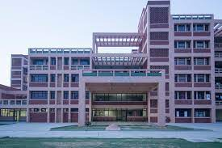
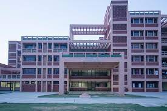

IIT Kanpur (IITK) is a leading institution for engineering education and research in India. With a rich
history dating back to 1959, it's renowned for its rigorous academic programs, world-class faculty, and
cutting-edge research facilities. IITK emphasizes both theoretical knowledge and practical application,
fostering a culture of innovation and entrepreneurship among its students. The institute is known for its
strong focus on research, spanning from fundamental sciences to applied engineering. Additionally, IITK
offers a vibrant campus life with various extracurricular activities, making it a holistic educational
experience.
Disciplines Offered
Engineering:
Aerospace Engineering
Biological Sciences and Bioengineering
Chemical Engineering
Civil Engineering
Computer Science and Engineering
Electrical Engineering
Materials Science and Engineering
Mechanical Engineering
Science:
Chemistry
Mathematics and Statistics
Physics
Humanities and Social Sciences:
Economics
English
Philosophy
Psychology
Sociology
Management:
Industrial and Management Engineering
Interdisciplinary Programs:
Environmental Engineering and Management
Earth Sciences
Why IITK?
IIT Kanpur (IITK) stands out for numerous reasons, making it an excellent choice for aspiring students. With its strong emphasis on academic excellence and world-class faculty, IITK offers a rigorous educational experience across a wide range of engineering disciplines. The institute's focus on research provides students with ample opportunities to engage in cutting-edge projects and contribute to advancements in their fields. Moreover, IITK fosters a culture of innovation and entrepreneurship, empowering students to turn their ideas into successful ventures. The vibrant campus life, international collaborations, and strong alumni network further enrich the student experience. With excellent placements and a holistic approach to education, IITK provides a platform for students to excel academically, professionally, and personally.

 
